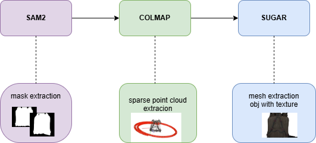
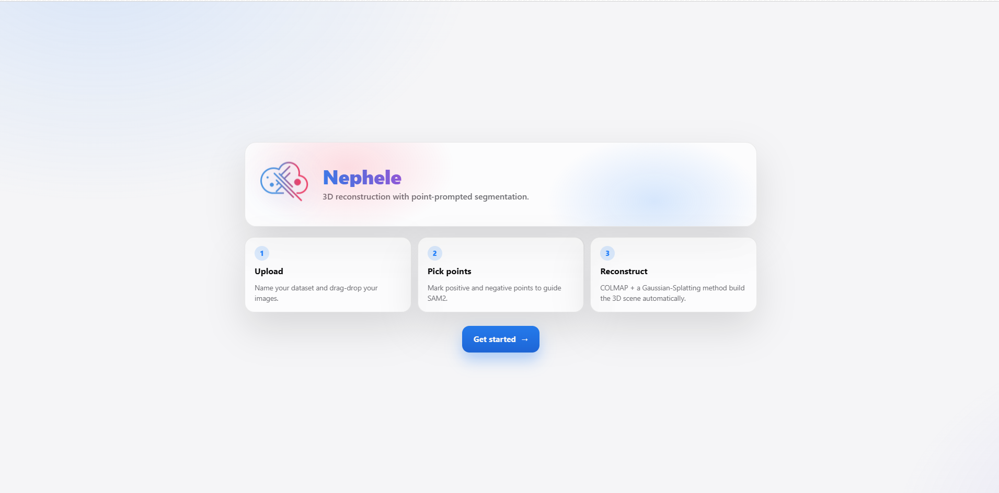
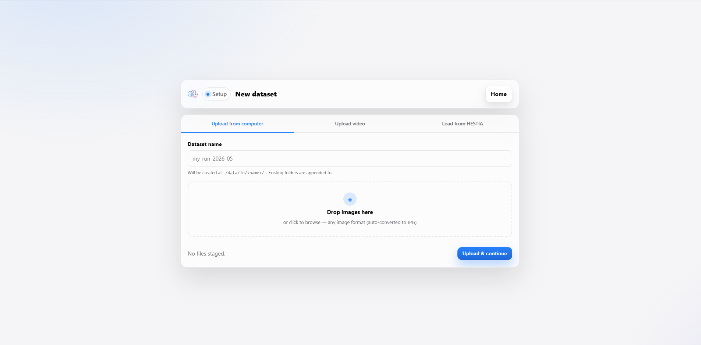
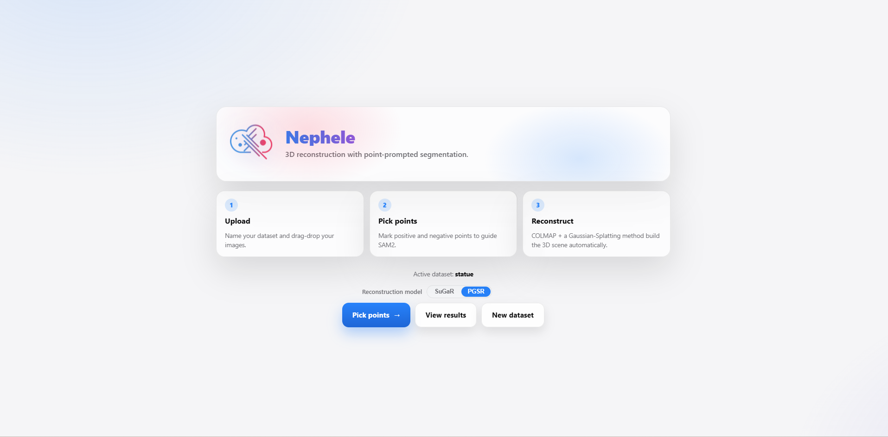
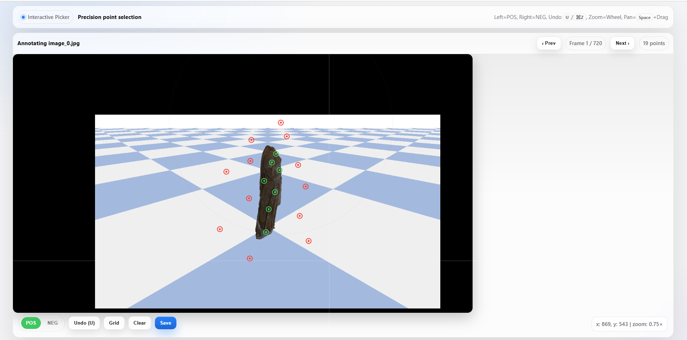
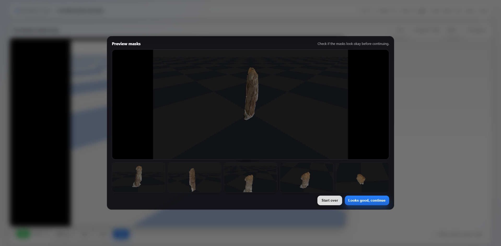
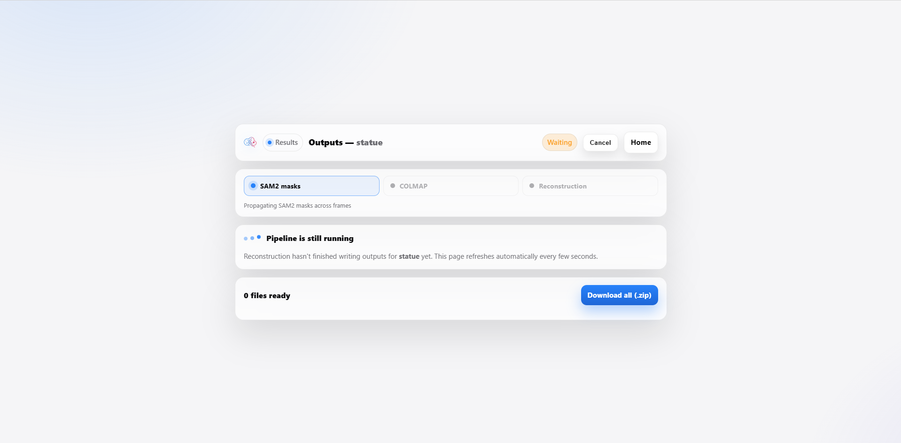
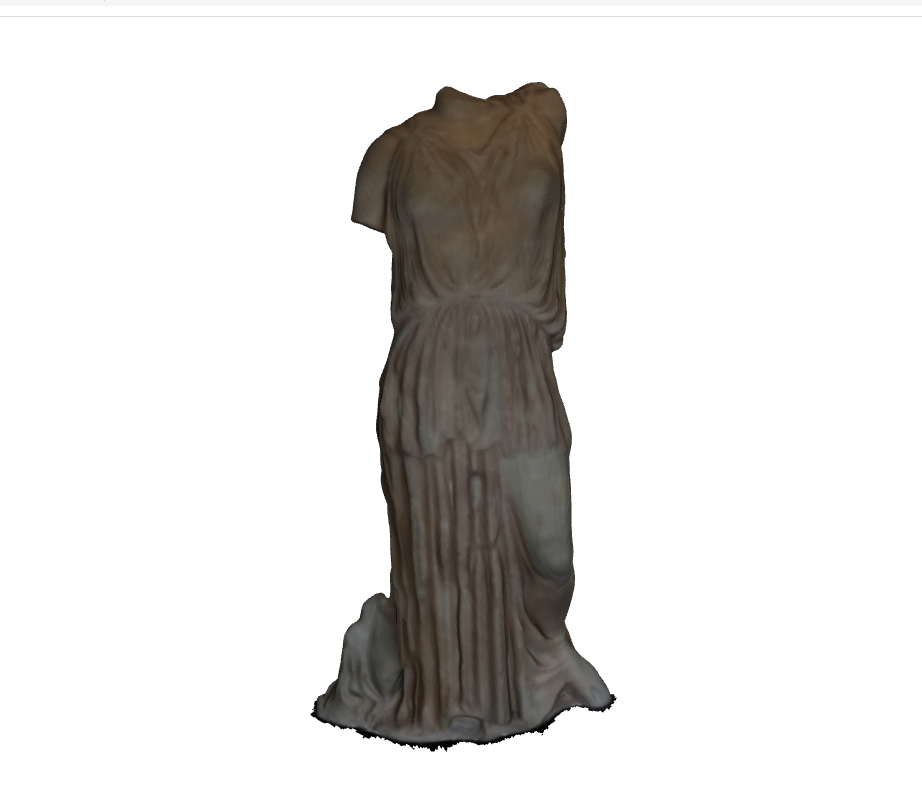

Nephele is a system that processes images to generate 3D meshes without backgrounds. By combining SAM2 (Segment Anything Model 2) for object segmentation and SuGaR / PGSR (Surface-Aligned Gaussian Splatting) for surface-aligned Gaussian Splatting, it isolates a target object from its surroundings and reconstructs an efficient, textured 3D mesh — ideal for applications that require clean, background-free reconstructions. Named after the mythological Nephele, goddess of clouds, the module reflects the core idea behind Gaussian Splatting: representing geometry as a continuous, cloud-like density field rather than a set of discrete points. Nephele is developed as part of the TEXTaiLES project at the Athena Research Center and is designed to be run locally or deployed as a self-hostable pipeline, with a browser-based UI that requires no programming to operate.

Given a set of multi-view images (or a video, or a scan pulled directly from the HESTIA database of the TEXTaiLES project), Nephele runs a three-stage pipeline:
The browser-based interface guides the user end-to-end, from raw images to a downloadable 3D mesh.

Input can be provided in one of three ways: uploading images from a local folder, uploading a video from which frames are automatically extracted, or loading an existing scan dataset directly from HESTIA.

The user picks the Gaussian Splatting model to use for reconstruction — SuGaR, a mature and widely-used general-purpose default, or PGSR, which better handles planar surfaces, textiles, and other thin structures. Both take the same masked frames and COLMAP poses as input and produce a textured mesh.

After loading a reference image, the user clicks to add points of interest: a left-click adds a positive point (green) marking part of the object to keep, and a right-click adds a negative point (red) marking part to exclude. These points target the regions used to generate the mask.

Once enough points are added, SAM2 generates a binary mask isolating the object, which is overlaid on the original image for quick visual review.

After reviewing the preview images, the user continues to the results page. Once processing finishes, the final outputs are available for download.

The final deliverable is an .obj mesh with the object isolated from its background,
ready for further processing or downstream 3D reconstruction workflows.

@software{Nephele_TEXTaiLES_2026,
author = {{Athena Research Center}},
title = {{Nephele: SAM2 + COLMAP + SuGaR pipeline for background-free 3D mesh reconstruction}},
url = {https://github.com/TEXTaiLES/SAMplify_SuGaR},
version = {0.1.0},
year = {2025},
license = {MIT}
}